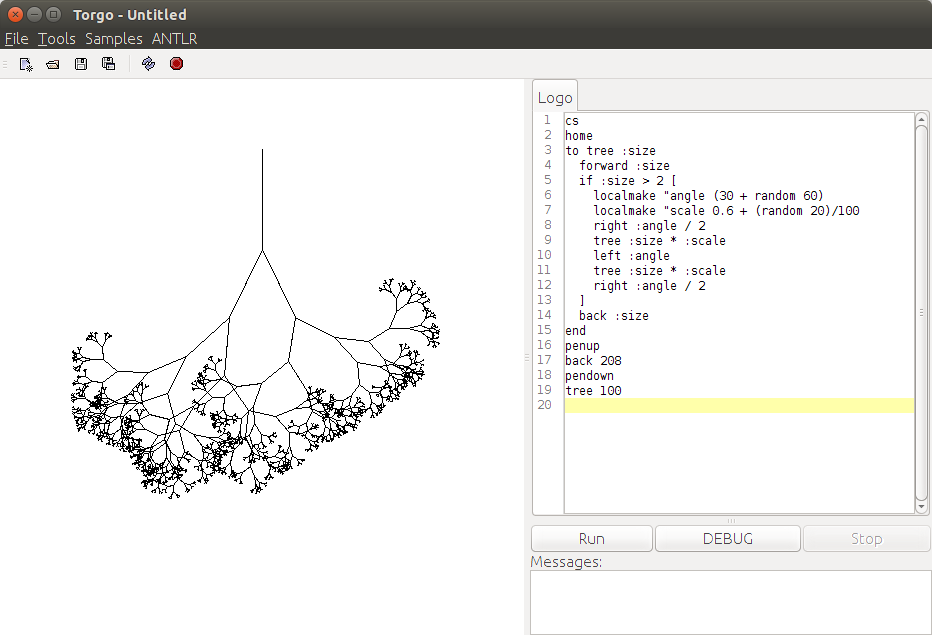
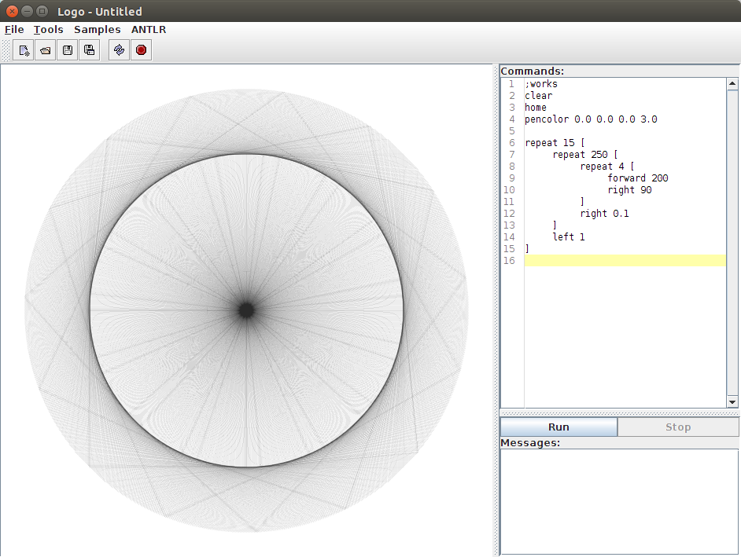
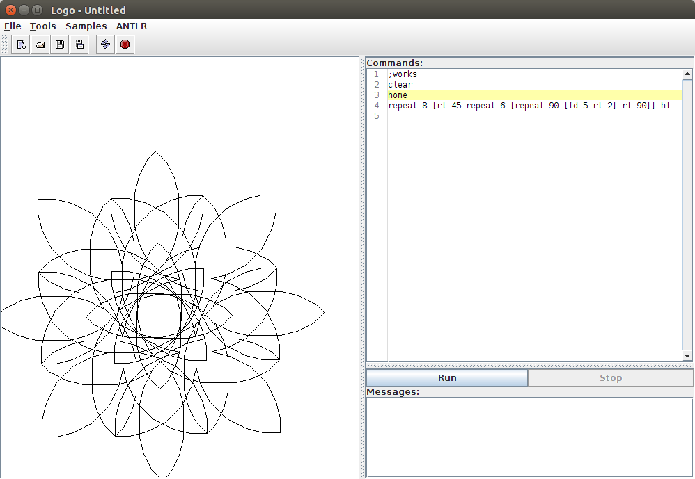
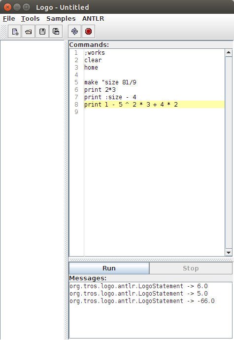
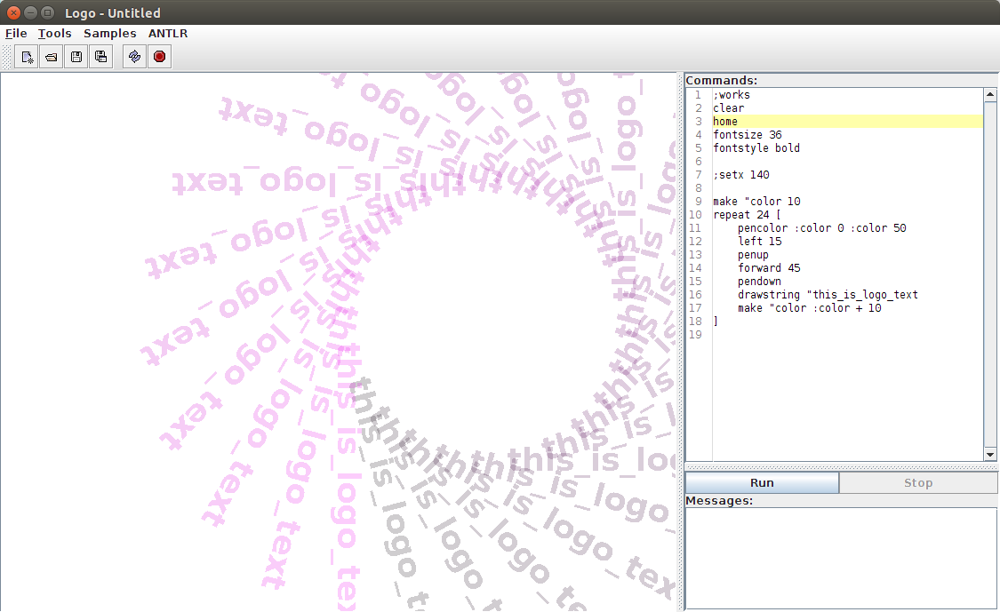

Torgo Logo Interpreter
Torgo is a Logo interpreter written in Java using ANTLR as a parsing backend.
Screen Shots





--
Matt
Source Code
Source code for Torgo is available through Google Code.
Avialable under the Apache License 2.0.
--
Matt